Apa itu Aquascape?
Aquascape adalah seni mengatur tanaman, air, batu, karang, kayu, dan yang lainnya di dalam media kaca atau akrilik, berbentuk kotak kaca mau pun bentuk lainnya yang serupa akuarium. Aquascape tidak hanya memelihara ikan tapi juga memelihara
semua komponen yang ada di dalam akuarium, dengan berbagai pendekatan dan ketelitian.
Aquascape juga digolongkan pada jenis hobi, memelihara ekosistem air tawar pada media akuarium. Memelihara ekosistem air tawar pada akuarium dikenal dengan istilah aquascape sedangkan ekosistem air laut disebut oceanirum. Aquascape
bermula pada tahun 1369, ide seorang kaisar China membuatkan wadah untuk memelihara ikan hias.
Jenis Tanaman Aquascape
- Bucephalandra
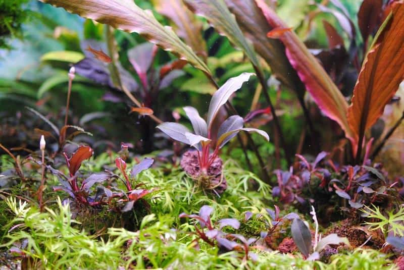
Tanaman asli indonesia yang biasa dikenal Buce ini tumbuh di pedalaman hutan. Bucephalandra ini sangat familiar di Kalimantan dan memiliki habitat di daerah sungai-sungai kalimantan. Tanaman ini selain indah juga termasuk
minim cahaya. Buce juga adalah jenis tanaman aquascape untuk pemula. Bucephalandra adalah salah satu tanaman air yang memiliki nilai ekonomis tinggi. Menurut beberapa informasi, para aquascaper di Amerika saja harus
mengeluarkan uang sebesar 7 USD untuk satu rumpun kecil buce.
- Hygrophila Polysperma
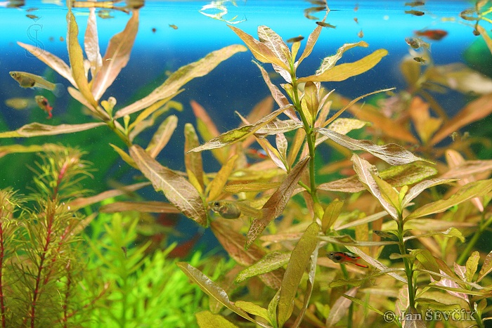
Hygrophila Polysperma juga tak kalah menarik sebagai rekomendasi tanaman hias di akuarium. Cocok untuk pemula karena perawatannya terbilang mudah dan praktis. Termasuk jenis tanaman air yang tak selalu mengandalkan oksigen untuk
tumbuh dengan baik,
- Water Wisteria
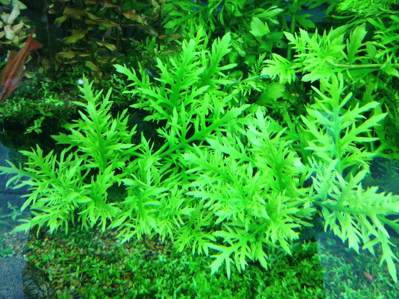
Tanaman water wisteria memiliki bentuk daun renda yang tinggi dan berwarna hijau. Sehingga, ini memberikan aksen hijau cerah yang indah untuk akuarium. Selain itu, water wisteria dapat ditanam di dasar akuarium dan menjadi
'karpet' jika menginginkannya. Tanaman aquascape akuarium ini mudah tumbuh dan membutuhkan perawatan yang gampang. kita bisa menanam tumbuhan ini di tempat dengan cahaya sedang, dan tumbuh baik pada suhu 23-27 derajat Celsius.
- Monte Carlo
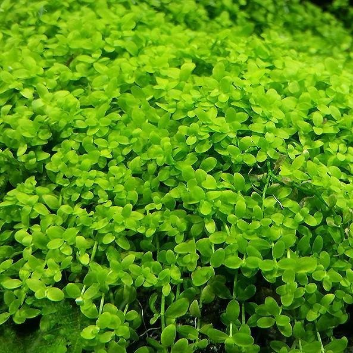
Menyerupai nama wilayah tertentu, ini adalah jenis aquascape yang hidup dengan perawatan praktis. Cocoknya diletakkan di dalam akuarium karena pertumbuhannya cukup cepat. Apalagi jika ini didekati dengan pencahayaan, akan tumbuh tinggi
tanpa harus menunggu waktu lama.
Hewan Aquascape
Menemukan ikan terbaik untuk melengkapi aquascape adalah suatu yang sangat penting karena ini akan menentukan keunikan dan keindahan pada aquascape itu sendiri. Ada beberapa ikan terfavorit diantaranya:
Cardinal Tetra
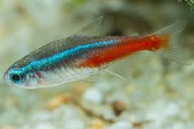
Ikan ini sangat populer di aquascaper karena warnanya yang cerah dan menakjubkan. Seperti neon terang yang transparan di seluruhan tubuh mereka terdapat tepat di atas garis merah tua
Guppy
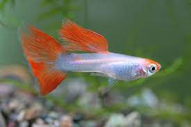
Ikan guppy merupakan salah satu ikan aquascape hias yang sudah menjadi favorit sejak lama bagi banyak orang. Ikan ini termasuk ke dalam salah satu ikan hias yang tidak mudah sakit dan sangat mudah untuk dirawat.
Molly
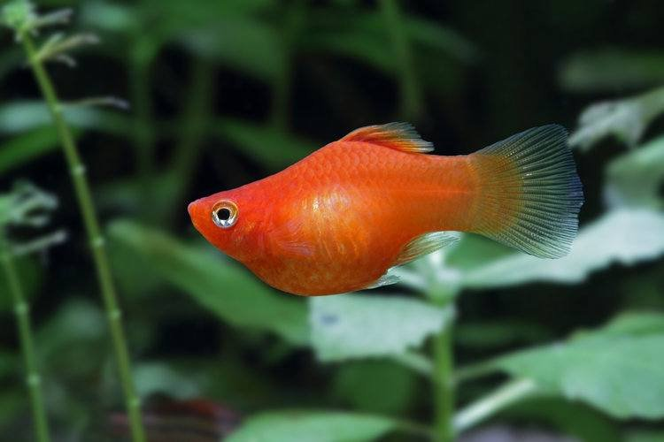
Ikan molly (Poecilia sphenops) adalah salah satu jenis ikan peliharaan yang cukup populer di kalangan aquarists. Ikan ini dikenal karena perawatannya cukup mudah dan ada berbagai pilihan jenis ikan molly yang mungkin untuk dipilih.
Angel Fish
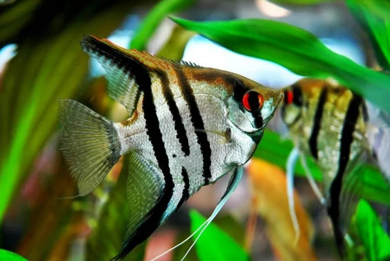
Ikan Manfish atau kadang dikenal sebagai Angel Fish adalah ikan hias air tawar yang memiliki tubuh lebar dan tipis. Hal ini karena warna ikan manfish memang sangat menarik dan berwarna-warni, memiliki rumbai atau slayer serta gerakannya
begitu tenang.
Tema Aquascape
3 / 3
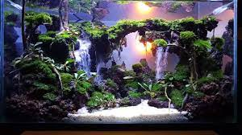
Tema Air Terjun
4 / 4
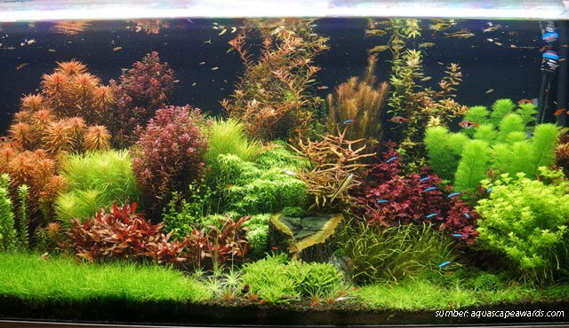
Tema Dutch Style
❮
❯
Paludarium
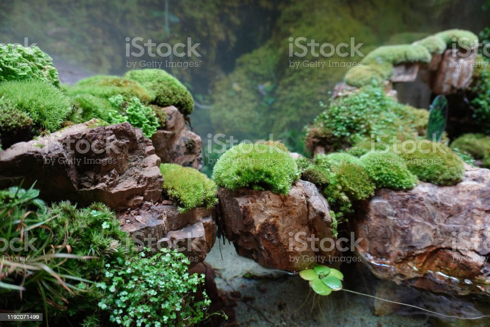
Paludarium merupakan salah satu tren yang berkembang di kalangan pencinta akuarium. Nama paludarium diangkat dari gabungan bahasa latin “Palus”, yang artinya rawa-rawa dan “Arium” adalah wadah.Dari namanya tersebut, kamu pasti dapat mengetahui
kalau paludarium dibuat seperti habitat rawa-rawa,yang menggabungkan unsur air, darat, dan udara di dalam suatu wadah atau ruang tertutup.Biasanya, paludarium hanya diisi dengan setengah atau seperempat air di dalam wadahnya. Oleh
karena itu, hewan yang dapat tinggal di dalam akuarium ini bisa beragam, mulai dari hewan air hingga darat. Beberapa jenis hewan yang dapat tinggal di paludarium adalah amfibi, ikan, burung, serangga, hingga penyu.Tentu, hewan yang
tinggal di dalam paludarium lebih bervariasi daripada hewan yang bisa tinggal di aquascape atau terrarium.
Terrarium
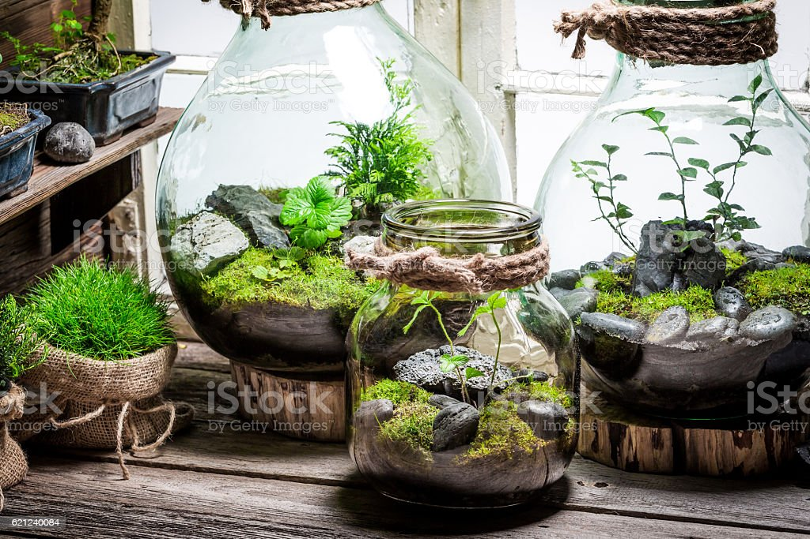
Terrarium adalah teknik menanam beberapa tanaman kecil di dalam wadah tertutup seperti kaca atau plastik transparan. Teknik menanam ini sangat populer di luar negeri yang konon diperkenalkan oleh ilmuwan asal London, Nathaniel Bagshaw
Ward tahun 1827. Terrarium ini dapat memberikan nuansa taman tropis, mediterania, atau padang pasir sesuai dengan bahan dan dekorasi yang digunakan.
Secara umum, teknik terrarium ini dibagi menjadi dua yaitu terrarium udara terbuka dan terrarium udara tertutup. Terrarium udara terbuka yaitu teknik menanam tanaman di wadah yang tidak menggunakan penutup. Sedangkan terrarium udara tertutup
yaitu teknik menanam tanaman di wadah yang tertutup rapat di semua sisinya.
Terrarium udara terbuka dinilai lebih mudah dibuat, mudah dirawat dan risiko terserang jamur dan bakteri yang lebih rendah dibandingkan terrarium udara tertutup. Jika Anda tertarik dengan terrarium tertutup sebaiknya memilih jenis tanaman
yang tepat sehingga dapat meminimalisir risiko jamur dan bakteri yang dapat menyerang.